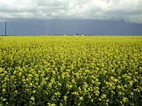

The world history of grain production
is almost as long as the history of humans.
|
There is evidence
that wheat was cultivated in China before 3000 BC and that wheat
was the chief crop in ancient Egypt and Palestine.
|

Barley was first planted in southwestern Asia. Rapeseed was one of the first
crops grown by humans. Canola (shown left), a type of rapeseed, has only recently
been grown in Canada.
|
Corn is the only major crop originating
in North America. It was grown by the Indian peoples here, as
described in the records of Christopher Columbus.
Today, Saskatchewan is the leading producer
of grain crops in Canada. Saskatchewan is referred to as "The
Wheat Province" because it produces more than 60% of Canada's
total wheat production.
Saskatchewan also produces
crops such as barley (shown left), oats, flaxseed and canola. Crop choice depends largely on type of soil, length of the growing season and available
soil moisture.
|

More than fifteen kinds of grain and
oilseeds crops are grown in the province. Each type of grain and
oilseed crop has many varieties. There are more than
sixteen different varieties of wheat grown in the province, and
more than a thousand varieties of wheat grown worldwide.
The cropland of Saskatchewan is divided
into four areas based roughly on climate, vegetation and soil
type. Yields of crop varieties may vary from area to area.
|

In order to decide which crop to seed, producers must consider both
the yields in the area and the special characteristics of the
crop variety such as the number of growing days needed for the
plant to reach maturity, resistance to plant diseases and susceptibility
to pests.
|
For example, each crop variety requires a certain number
of days to mature. The farmer must be aware of the number of "frostfree
days" in the area and select a crop that will mature in this
time period.
|
The performance of any variety will vary from year
to year and place to place depending on the insects, weather conditions,
disease occurrence and management practices.
|
Modern grain production consists of
a series of largescale and mechanized processes. Each process
requires specialized pieces of equipment.
|
Tillage is similar
to the process of hoeing a garden. It aerates the soil, rids the
soil of weeds, buries plant matter that eventually rots and replenishes
lost soil nutrients and prepares a seed bed for seeding. Modern equipment allows for tillage and seeding at the same time.
|

New tillage
techniques and implements are constantly being designed and used
by farmers. Conservation tillage techniques such as zero tillage
are necessary in much of Saskatchewan because the prairie soil
is dry and easily eroded by wind and water.
|
Seed must
be obtained from seed growers or grain that was harvested in the
previous year. It must be cleaned prior to seeding.
|

There are many different types of seeding
equipment. Basically, they all open a furrow in the soil, drop
the seed in at an even depth, cover the seed and pack the soil.
Fertilizer may be placed with the seed or spread prior to or after
seeding.
|
Spraying chemicals is the most common method of crop protection against damage from weeds, insects, fungi
and diseases. Nowadays, several other alternatives are being used by innovative farmers to minimise environmental damage.
|
Improper use of crop protection chemicals can have devastating longterm effects on the environment. More research
is being done into less hazardous biological control products and practices such as Integrated Pest Management.
|

Harvest begins
when the crop is sufficiently mature for its intended use. Silage
crops are harvested when they are still green. Grain crops, oilseeds
and alternative crops are harvested when they are ripe.
|